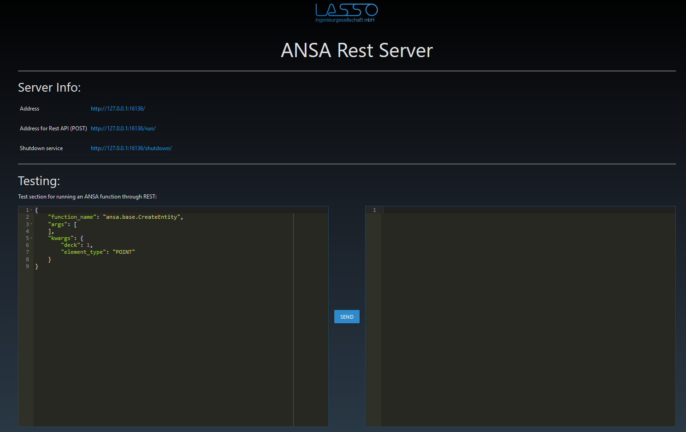

rest¶
This is the ANSA REST module.
What is the REST API?¶
Representational State Transfer (REST) is a type of data transfer. REST itself does not specify any exchange format and simply represents an umbrella term. Nonetheless nowadays the name REST is frequently used as a term for web-based interfaces with a text-based exchange format such as JSON (or less popular XML and HTML). The transfer is usually performed via the HTTP protocol, thus relying on HTTP methods such as ‘GET’, ‘POST’, ‘DELETE’, etc. For running ANSA functions ‘POST’ is used.
What is the ANSA REST API used for?¶
The REST API turns ANSA into a microservice, allowing you to perform actions from an outside program written in an arbitrary language. Since ANSA is stuck in Python 3.3 which was released in 2012, this is a big relieve. This opens up the entire ecosystem since certain libraries are often only available for certain languages. Also heavy computations such as machine learning can be performed in other languages.
What data exchange format is used?¶
The dataformat is JSON, which is a text-based format. Text-based formats are not efficient but simple to use. Also JSON is very established in the entire programming community. For higher performance RPC can be used, which is also much safer, but the current implementation in
lasso.ansa.grpcis limited to communication with another python program outside of ANSA.
How to start the service?¶
The entire package is wrapped as a command-line utility. The service info can be called as follows:
> python -m lasso.ansa.rest.server --help REST JSON Server for ANSA Remote Scripting from LASSO GmbH ---------------------------------------------------------- optional arguments: -h, --help show this help message and exit --ansa-filepath ANSA_FILEPATH Filepath to ANSA. --python33-path PYTHON33_PATH Path to the python 3.3 installation whose site- packages contains packages for ANSA. --port PORT Port on which the remote scripting will be served.The required arguments are the filepath or command of the ANSA executable as well as a path to a Python 3.3 distribution (usually an Anaconda environment). The REST API requires a package called
flask, which should be copied either into the ANSA installation or preferably installed by using an Anaconda environment and specifying the path as an argument here. Ifflaskcan not be found the program will ` yell at you and tell you how to install it.Example:
> python -m lasso.ansa.rest.server --ansa-filepath C:\BETA_CAE_Systems\ansa_v19.1.2\ansa64.bat --python33-path C:\Anaconda3\envs\py33 [/] Running: C:\BETA_CAE_Systems\ansa_v19.1.2\ansa64.bat -nolauncher -nogui -execscript C:\Anaconda3\lib\site-packages\lasso-0.1.0-py3.6.egg\lasso\ansa\rest\server_ansa.py -execpy "serve(16136)" ... ANSA startup info ... ... Generating code... Code generation completed. ANSA Remote Scripting Server by LASSO GmbH ------------------------------------------ * Serving Flask app "ansa-rest" (lazy loading) * Environment: production WARNING: Do not use the development server in a production environment. Use a production WSGI server instead. * Debug mode: off * Running on http://127.0.0.1:16136/ (Press CTRL+C to quit) #
How to check for a running server?¶
Visit the website shown at startup and you will see an info page. Also there is a test section allowing you to test ANSA commands from within the browser (internally its of course Javascript).

How to communicate from the outside world?¶
Simply trigger a ‘POST’ request in JSON format from an outside program on the specified run-address displayed by the info page. The format JSON exchange format requires three arguments:
function_nameName of the ANSA scripting function with the entire module path
argsArgument list supplied to the function
kwargsNamed arguments for the function mentioned previouslyThese three pieces will be translated within ANSA into a python function call. Error messages will be thrown back into your face from the python side such as missing arguments.
Example payload for a POST request.
{ "function_name": "ansa.base.CreateEntity", "args": [ ], "kwargs": { "deck": 1, "element_type": "POINT" } }The response always has two components:
successindicating whether an error was thrown by ANSA
payloadwhatever the function call returned or the error messageThe return values are automatically converted to JSON before transfer. ANSA entites are an ANSA specific class thus not directly available in JSON. We transfer all of the entities properties into a JSON object in such cases. See the response for the pervious function call below:
{ "payload": { "__doc__": "ANSA Entity object", "_bcomment": "", "_bname": "", "_comment": "", "_edge_index": 220135424, "_id": 1, "_name": "", "_type": 3911, "active": true, "ansa_type": "POINT", "id": 1, "module": null, "position": [ 0, 0, 0 ] }, "success": true }Here is an example for sending JSON requests from Javascript:
// build the request let request = { "function_name": "ansa.base.CreateEntity", "args": [ ], "kwargs": { "deck": 1, "element_type": "POINT" } } // call remotely let xhttp = new XMLHttpRequest(); xhttp.open("POST", "http://127.0.0.1:16136/run/", true); xhttp.setRequestHeader("Content-type", "application/json"); xhttp.send(JSON.stringify(request));
What if I have to call a function with an ANSA entity?¶
An ANSA entity is identified by a JSON object having 2 properties:
idof the entity
ansa_typetype of the entityExample:
{ "function_name": "ansa.base.SetEntityCardValues", "args": [ ], "kwargs": { "deck": 1, "entity": { "id": 1, "ansa_type": "POINT" }, "fields": { "X": 4, "Y": 3 } } }
Wheres the ANSA Window (GUI)?¶
The GUI is hidden, since for a microservice a GUI is an unneccesary slow-down. Also the service blocks ANSA, thus its useless.
How to shut down the service?¶
Either hit Ctrl+C in the command line or visit the shutdown website link displayed in the info.